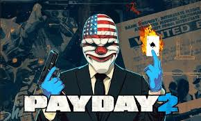
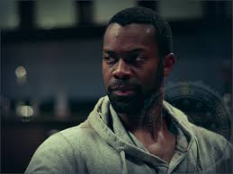

Тема сайта: сюжет PAYDAY 2
В игре PAYDAY 2 есть 4 основных героев:
Даллас
Даллас (ориг. Dallas) — играбельный персонаж в PAYDAY: The Heist, PAYDAY 2 и PAYDAY: Crime War, а также персонаж в PAYDAY: The Web-Series.
Биография
В молодости Даллас работал в чикагской мафии вышибалой, но благодаря выдающемуся интеллекту быстро поднялся по криминальной лестнице до работы убийцы. Когда ему было 30 лет, он попытался натравить чикагские мафиозные семьи друг на друга, в результате чего погибло много полицейских и бандитов. Лидеры мафиозных кланов узнали о причастности Далласа к этому и объявили охоту за его головой. Далласу удалось выжить и затаиться, попутно запустив подпольную торговлю оружием. Одновременно с этим, он также старался нарушить потоки наркотрафика в США, атакуя торговцев наркотиками.
После десяти лет в бегах и безуспешных попыток повлиять на криминальный мир, у Далласа, как говорит Бэйн, случился "что я делаю со своей жизнью?" личностный кризис. Он решает выкрасть груз оружия и собрать свою криминальную банду. Бэйн находит потерявшегося преступника и начинает образование банды PAYDAY, где Даллас, из-за своей исполнительности и гениального ума, становится лидером.
К событиям PAYDAY 2, Хокстон попадает в тюрьму. Даллас, чтобы не показать ослабление банды перед правоохранительными органами, решает взять на место Хокстона своего младшего брата. Он становится "новым" Хокстоном, но в будущем, с освобождением "старого" Хокстона, брат Далласа берет уже новое прозвище — Хьюстон.
В концовке PAYDAY 2 банда распускается, но Даллас является единственным, кто не бросает свою маску в могилу.
Личное дело в файлах FBI
Если это не лидер, то он определенно доверенный лейтенант. Даллас — один из первых четырех, которые появились в 2011 году. Он, кажется, является вдохновителем банды, а его спокойное поведение под огнем демонстрирует как большой опыт, так и хитрый интеллект.
Записи камер слежения показывают, что его волосы седеют, возможно, это указывает на то, что он один из старейших членов банды.
Его улыбающаяся клоунская маска с американским рисунком стала символом банды PAYDAY.
Примечание
Основное
- Даллас является самым узнаваемым персонажем в серии PAYDAY и появляется практически на каждом промо-изображении, выступая в роли маскота.
- Он чаще всего считается лидером или «главой» команды в рекламных материалах. Гектор также отмечает, что Даллас является лидером банды PAYDAY в одной из голосовых записей в ограблении "Месть Хокстона".
- Он смоделирован с Карла Лакнера, арт-директора Overkill Software. В PAYDAY 2, внешний вид Далласа был заменен на внешность актера Эрика Этебари, который сыграл Далласа в веб-сериале.
- Даллас назван в честь одноименного города из штата Техас, США.
- Во время разработки были рассмотрены и отклонены следующий прозвища: Ковбой, Тачдаун и Шеф.
- Даллас должен был быть русским на ранних стадиях игры, на что указывают множественные следы в игровых файлах.
- Появляется в игре SpeedRunners в виде секретного персонажа.
PAYDAY: The Heist
- Актер озвучки Далласа (Саймон Керр) также озвучил Бульдозера в первой игре.
PAYDAY: The Web Series
- Был сыгран актером Эриком Этебари.
- Даллас, как и Чейнс, использует в первой и второй серии сериала Heckler Koch HK416. Его HK416 имеет короткий ствол и прицел Aimpoint.
PAYDAY 2
- Даллас представляет класс "Манипулятор".
- До обновления изменяющего древа навыков, Далласа можно было наблюдать в меню навыков Манипулятора.
- Во время ограбления "Месть Хокстона" выясняется, что изначально именно Далласа планировалось сдать властям, но позже был выбран Хокстон.
- Даллас — единственный персонаж, доступный для игры на обучающих ограблениях "Основы скрытности" и Основы ведения боя". Предположительно, прошло два года с тех пор, как он в последний раз участвовал в ограблениях, и Бэйн устраивает тому проверку, чтобы убедиться, не растерял ли он свои навыки.
- Хотя это соответствует с датами выпуска игр (PAYDAY: The Heist в 2011 году и PAYDAY 2 в 2013 году), в нем не учитывается первая игра, канонически охватывающая период с 2011 по 2012 год и вторая игра с 2013 по настоящее время, когда Даллас неоднократно появлялся в трейлерах и после выхода веб-сериала.
- В обучающих ограблениях часто комментирует события и общается с Бэйном.
- Несмотря на то, что внешность Далласа сменилась, его, как и в первой части, озвучивает Саймон Керр.
- В трейлере ограбления "Спасение Хокстона", несмотря на игравшего его там Эрика Этебари, озвучен он был Керром.
- В трейлере ограбления "Спасение Хокстона", даллас использует Bernetti 9, a Crosskill и Uzi (на самом деле Mini Uzi, вариаций которого в игре нет).
- Он также использует стрельбу с двух рук, презентуя тем самым новый тогда навык "Акимбо" из ветки Беглеца.
- Несмотря на то, что в трейлере он использовал Crosskill в одной руке и Bernetti 9 в другой, игровое парное оружие не имеет вариаций различного вооружения в разных руках.
- Позже, во время автомобильной погони, Даллас также использует две штурмовые винтовки CAR-4 одновременно, хотя, в игровых реалиях, в парный класс входят только пистолеты, пистолеты-пулеметы и дробовики.
- Он также использует стрельбу с двух рук, презентуя тем самым новый тогда навык "Акимбо" из ветки Беглеца.
- Во втором эпизоде веб-сериала он называется полиции как Натан Стил.
- Далласа называет Натаном и Дантист в одноименном трейлере.
- В трейлере The Butcher's Western Pack, на плакате с розыском указано имя Натан "Даллас" Стил.
- Влад в Убежище также называет Далласа Натаном Стилом.
- Исходя из вышеперечисленных фактов, Натан Стил, с высокой долей вероятности, является настоящим именем Далласа.
- Фото обоих актёров играющих Далласа можно заметить на втором дне ограбления "Спасение Хокстона" в списке самых разыскиваемых лиц в Вашингтоне.
- До выхода обновления напарников "Помощники", ИИ был всегда вооружён автоматом AK.762 и пистолетом Bernetti 9 c глушителем.
Хокстон
Хокстон (ориг. Hoxton) — играбельный персонаж в PAYDAY: The Heist, PAYDAY 2 и PAYDAY: Crime War, а также персонаж в PAYDAY: The Web-Series.
Биография
Родом из Шеффилда, Южный Йоркшир, Великобритания. У него есть два брата, о которых ничего не известно.
Хокстон был проблемным подростком и любил устраивать "разборки" с хулиганами, своими братьями, футбольными болельщиками и даже участвовал в подпольных боксерских поединках. На работах Хокстон тоже не задерживался, считая, что за минимум усилий она должна приносить максимум прибыли. Такой взгляд на вещи вынудил его влезть в долги, погасить которые ему помог мелкий разбой. В результате Джеймс Хоксворт со своей бандой был пойман полицией в Лондоне, в округе Хокстон, в честь которого в будущем он возьмет свое прозвище. Свое первое ограбление (алкогольного магазина) он совершил в возрасте 19 лет.
После отсидки он решает работать на мафию и возрасте 20 лет начинает жизнь в крупных криминальных кругах. Неизвестно, когда именно Хокстон стал работать независимо от кого бы то ни было.
Во время совершения грабежей на территории Великобритании он, при не очень благоприятных обстоятельствах, повстречал Кловер, для которой стал напарником и учителем по криминальному делу. После долгого периода совместных ограблений Кловер решила отделиться от Хокстона и скрылась вместе с грузовиком, полным штурмовых винтовок L85. Хокстон подумывал о том, чтобы убить её, но, в конце концов, гордый тем, что сумел хорошо её обучить, решил оставить в живых. Затем Хокстон отправляется в США, где позже вступает в команду PAYDAY, а Кловер остаётся в Великобритании.
В 2011 году, перед событиями PAYDAY 2, в ходе спецоперации FBI, Хокстон был арестован. По первоначальным данным, его нашли с помощью следов ДНК, снятых с Первого Всемирного Банка. Хокстона приговаривают к отбыванию срока в тюрьме строгого режима. По совпадению, его подселили в одну камеру с Мэттом Роско, который давно подставил банду в ходе ограбления "Heat Street".
В тюрьме у Хокстона появились подозрения, что его подставили. Изначально он винил в этом Мэтта, в камеру к которому он попал, за что стал регулярно его избивать, "ломая тому каждую неделю новую кость". Ко второму дню своего заключения он узнает, что его место занял новый грабитель, и выражает крайнее недовольство тем, что кто-то носит его имя и маску. Его адвокат объяснил, что невозможно вызволить его из тюрьмы из-за большого количества неопровержимых доказательств и нападений на Мэтта Роско, потому, придя к выводу, что единственный выход их тюрьмы — побег, Хокстон решает связаться с Бэйном.

Тем временем банда решает разработать план по вызволению Хокстона из тюрьмы, с чем им помогают их наниматели; Слон связывается с бандой, запрашивая помощь в фальсификации выборов на пост мэра Вашингтона. Взамен на продвижение своего друга Боба Маккендрика на этот пост, Слон обещает с его помощью устроить перевод Хокстона из тюрьмы строгого режима в менее защищенную. Банда справляется с работой.
Спустя время с Далласом контактирует Дантист — загадочный человек, демонстрирующий впечатляющую осведомленность о банде в целом. Он давит на совесть Далласа, указывая на то, что Хокстона арестовали потому, что банда "оставила" его. Дантист предлагает банде помощь в его вызволении взамен на некоторые услуги, которые принимается выполнять.
Дантист предлагает надавить на коррумпированного окружного прокурора Вашингтона путем убийства его связей с криминальным миром, а именно убийства Григория Берия, русского мафиози, более известного как Комиссар. Это приблизит банду на один шаг в вызволении Хокстона.
27 октября 2014 года наступает день побега. Команда атакует конвой и перехватывает находившегося там Хокстона и под прикрытием команды они скрываются. Хокстон, оглядываясь назад, понимает, что не Мэтт его подставил, и во втором дне ограбления банда PAYDAY штурмует офис FBI в желании найти имя того, кто сдал Хокстона властям. Не найдя конкретного имени, команда забирает зашифрованное оборудование со сведениями о этом деле. После дешифровки данных команда выясняет некоторую информацию о предателе, но его личность все еще оказывается под секретом. Команда заходит в тупик.
С этого момента Хокстон возвращается в банду. Не желая брать новое прозвище, он вынуждает команду дать новое прозвище новичку. Отныне "новый Хокстон" теперь зовется Хьюстоном, но маску ему позволили оставить. Сам же Хокстон заимел новую, которую сам сделал в тюрьме. На левой стороне его новой маски виднеется рисунок, похожий на ожог на лице Хокстона, который он получил, предположительно, во время пыток на допросах.
Информацию о подставе Хокстона, а также о месте, где сейчас находится человек, сдавший преступника, узнала Бонни. В давние годы она подружилась с Хокстоном, но их пути разошлись, а сама она попала в тюрьму. Там она использовала свои игровые навыки, чтобы выиграть информацию, и ей удалось узнать о печально известной банде PAYDAY, в которую она загорелась желанием вступить после освобождения. Она, помимо прочего, по счастливому совпадению делила камеру с Джулианой Моралес, родственницей Гектора, которая разболтала ей важную информацию о подставе Хокстона, а также то, что человек сдавший его ныне находится под охраной FBI. За эти знания Хокстон уговорил товарищей принять Бонни в банду.
2 марта 2015, по прибытию на предполагаемое место пребывания предателя, команда находит убежище, взломав которое выясняется, что все это время предателем был Гектор. Банда ликвидирует бывшего работодателя.
На записях, разбросанных по всему убежищу, записаны разговоры между Гектором и агентом FBI, где выясняется, что Гектор работал на обе стороны, а FBI пользовались доступом Гектора к Crime.Net.
В 2016 году, устав от того, что Бэйн уже несколько лет обещает обустроить Убежище и так этого и не сделал, Хокстон взрывает старое укрытие-прачечную. Он звонит своему личному дворецкому Альдстоуну и тот решает вопрос жилья, обустраивая новое Убежище.
Выясняется, что Хокстон распорядился своими финансами вложив их в собственное поместье в Великобритании, в котором нанятый им Альдстоун работал.
Личное дело в файлах FBI
Недавно Хокстон был заключён в тюрьму Хейзелтона, но был освобожден бандой PAYDAY, когда он был доставлен на слушание по рассмотрению возможности условно-досрочного освобождения. Мы уверены, что будет очень трудно снова посадить его.
Примечание
Основное
- Хокстон, как и Хьюстон, имеет самое большое количество реплик, относящихся к целям миссии. Реплики Хокстона также разнообразнее и длиннее, чем у остальных грабителей.
- Во время разработки были рассмотрены и отклонены следующий прозвища: Knuckles, Haggis, Hackney и Chips.
- Несмотря на то, что Хокстон совершил свое ограбление в 19 лет, он сидел в Институте юных правонарушителей Ее Величества. Данное учреждение принимает детей возрастом с 15 до 17 лет, что может указывать на то, что или была допущена сценарная ошибка, или Хокстон сидел до ограбление алкогольного магазина.
PAYDAY: The Heist
- Хокстон должен был быть американцем на ранних стадиях игры, на что указывают множественные следы в игровых файлах.
- Прообразом Хокстона послужил музыкант и разработчик из Overkill Software Ричард Блум.
- Хокстон озвучен Питом Голдом.
- Пит Голд является единственным актером озвучки, кто озвучил лишь одного персонажа.
- Хокстон озвучен Питом Голдом.
- Иногда дружелюбно называет Вулфа как "Вулфи", а Чейнса — "Чейнси"
- Изначально Хокстон должен был говорить сленгом Кокни, но, т.к. лучшим актером озвучки, что разработчики смогли найти, оказался Пит Голд, который родом из Шеффилда, Хокстон получил Йоркширский акцент.
- Исходя из этого, разработчикам пришлось придумать, почему Хокстон носит такое прозвище, т.к. Хокстон — район в Большом Лондоне. В конце концов, была придумана легенда, что там он впервые был арестован.
- Представляет класс Sharpshooter
- Актер озвучки со времен PAYDAY: The Heist остался прежним. Аналогичная ситуация с Далласом и Вулфом, но у Чейнса актер озвучки сменился.
- Изначально Хьюстон планировался как полная замена Хокстона, поскольку Пит Голд, озвучивший его в PAYDAY: The Heist, не смог повторить свою роль во второй части. Из-за большого желания сообщества вернуть старого Хокстона, Overkill Software пришлось написать предысторию исчезновения Хокстона, а позже и ввести его в игру. Во избежании путаницы, новый Хокстон получил имя "Хьюстон". Пит Голд также вернулся к работе над персонажем.
- Оригинальное лицо Хокстона, смоделированное с Ричарда Блума, не вернулось во второй части по причине "авторского права". Новым лицом Хокстона во второй части стал Джош Лен, ранее сотрудничающий с Starbreeze Studios. Он и сыграл Хокстона в трейлере ограбления "Спасение Хокстона".
- Джош Ленн также озвучил Боди.
- В трейлере ограбления "Спасение Хокстона", по средствам липсинга, голос Джоша был перезаписан на голос Пита Голда.
- В трейлере у Хокстона отсутствует фирменный хвостик из-за иной прически у актера, но в самой игре хвостик имеется.
- Известно, что Ричард Блум уделял больше времени своей музыкальной группе, чем работе в Overkill Software. В результате он покинул Overkill Software.
- Является первым и единственным грабителем, для открытия которого требуется пройти ограбление и открыть соответствующее достижение.
- Предположительно, задуманная как отсылка на шутки в сообществе, Хокстон может прокомментировать постоянные уточнения от Бэйна по аудиосвязи, говоря, что хотя-бы в тюрьме он не слышал постоянных указаний ("At least in the nick I didn't have Bain yappin' in me ear like a needy dog. Get the drill, my arse!").
- Модель хвостика в прическе Хокстона не имеет "кости", из-за чего может просачиваться сквозь шлема.
- Во время ограбления "Месть Хокстона" выясняется, что изначально именно Далласа планировалось сдать властям, но в итоге был выбран Хокстон.
- Тюремный номер Хокстона — "40X70N". Это "лит спик" прозвища "Хокстон".
- Хокстон носит оранжевый тюремный комбинезон во время побега. Когда он выбран в качестве играбельного персонажа, он носит светло-коричневый костюм и галстук.
- Таким образом Хокстон является единственным из оригинальной четверки, кто не носит оригинальный костюм из первой части. Даже Хьюстон, который заменил Хокстона, носит отличный от него в первой части костюм.
- Голосовая строка запуска ранее популярной в сообществе модификации HoxHud ("HoxHud Initialised") была записана и предоставлена самим Питом Голдом.
- Хокстон, как NPC в ограблении "Спасение Хокстона", имеет столько же здоровья, сколько и синий SWAT, но у него также подключено "бессмертие".
- Во время крика Хокстон может произносить реплики полиции.
- Хокстон знаком с Джоном Уиком, о чем говорит случайная реплика на ограблении "Спасение Хокстона" о его семье, а также реплика при разговоре с ним в Убежище, если играть за Уика.
- Хокстон представляет древо навыков Беглец.
- В случайной реплике на первом дне ограбления "Спасение Хокстона" он может сказать, что более не подозревает Мэтта Роско в том, что это он его подставил. Он даже выдвигает предложение, что можно будет и его вытащить из тюрьмы.
- Впервые о его заключении стало известно из A Merry Payday Christmas Soundtrack, где в интро сообщалось о том, что Хокстон попал в тюрьму между событиями PAYDAY: The Heist и PAYDAY 2, а также говорилось, что он хочет связаться с Бэйном, чтобы тот помог ему с побегом.
- Любопытно, что адвокат, во время попытки назвать Хокстона настоящим именем, успевает произнести только "Бо-", прежде чем Хокстон его прерывает, что противоречит настоящему имени персонажа.
- Настоящее имя Хокстона (Джеймс Хоксворт) становится впервые известно из трейлера нанимателя Дантиста, где Далласа также называют по имени Натан Стилл, которое раньше использовалось в PAYDAY: The Web-Series. Можно было бы предположить, что "Джеймс Хоксворт" — псевдоним, но в файлах FBI, а именно в заметках о Хокстоне, также указано это имя.
- Одного из разработчиков игры зовут Бо Андерсоном.
- Любопытно, что адвокат, во время попытки назвать Хокстона настоящим именем, успевает произнести только "Бо-", прежде чем Хокстон его прерывает, что противоречит настоящему имени персонажа.
- Хокстон использует новую маску кустарного производства. Во многом она напоминает старую, но более искаженную и имеющую рисунок в виде ожога на левой стороне.
- Созданием маски он занимался будучи в тюрьме.
- Хокстон явно не жалует свою "замену" в команде. Он часто оскорбляет Хьюстона, но, несмотря на это, он подмечает, что "он не совсем бесполезный", когда Хьюстон спасает его от SWAT в трейлере ограбления. Вероятно, таким образом он вымещает злобу за то, что его заменили и отняли имя, пока он был в тюрьме.
- Реплика "I just saw a spider so big, I think it was on Pacific Rim (на рус. Я видел такого большого паука что подумал, что он из Тихоокеанского рубежа)" ссылается на фильм "Тихоокеанский Рубеж".
- Реплика "Run, Forrest, Run", озвучиваемая при использовании навыка "Вдохновение" из ветки Манипуляторя, является отсылкой на популярную сцену из фильма "Форест Гамп".
- Через Хокстона в банду попали Кловер и Бонни, что делает его первым и единственным членом команды, который привел в банду несколько женских персонажей.
- Об опыте пребывания в тюрьме Хейзелтона могут рассказать реплики других грабителей со слов Хокстона, а также сам Хокстон:
- ужасная еда, Хокстон называет ее "дерьмом на гальке";
- вечер четверга зовется "развратной ночью"; такой опыт, по-видимому, достаточно плох, чтобы заставить команду переосмыслить криминальную жизнь. Судя по названию, может повлечь за собой сексуальное насилие.
- литье "отбеливателя в глаза";
- "недостаток должного чая", поскольку только Эрл Грей и зеленый чай, по мненю Хокстона, являются единственно верными вариантами для чая;
- пропуск футбольных матчей "Шеффилд Уэнсдей" и гадание того, как дела у команды, т.к. единственное, что показывают в тюрьме — это хоккей, который, по словам Хокстона, "е**ная девчачья игра...";
- дружба с некоторыми заключенными, например с Микки "Кальмаром", "Грязным" Аланом и "Рыбными пальцами", — некоторые из сокамерников, которые подружились с Хокстоном;
- избиение Мэтта Роско.
- Хокстон является поклонником "Шеффилд Уэнсдей", о чем свидетельствует его реплика в ограблении "Спасение Хокстона" (How's ol' Sheffield Wednesday doing? All we got in there was news about hockey... fuckin' girl's sport, that is... на рус. Как поживает старый добрый Шеффилд Уэнсдей? Все, что у нас там было — новости о хоккее... е**ная девчачья игра...").
- Хокстон, как ни странно, носит свою оригинальную маску в трейлере Hardcore Henry Heists.
- Хокстон стал гораздо более агрессивным во второй части. Тем не менее, он все еще дружелюбен к своим товарищам по команде, за исключением Хьюстона и, возможно, Джимми.
- Несмотря на то, что особняк Хокстона зовется "резиденцией Хоксворта", Альдстоун подразумевает, что он единственный, кто находится там. Он говорит Хокстону, что в особняке присматривал за могилами и разговаривал с картинами, а также заявляет, что его рассудок не поврежден (по крайней мере сильно).
- По словам Альдстоуна, Хокстон в юности часто играл в "полицейских и разбойников", и, скорее всего, большую часть времени он играл за разбойника.
- Исходя из записи на экране загрузки, Хокстон имеет страсть к пиву всех сортов. Несмотря на это, в отличии от Джимми и Бонни, Хокстона в игре нельзя увидеть пьющим.
- В видео секретной концовки у Хокстона не было ожога, как и в трейлере The Butcher's BBQ Pack.
- Его можно было заметить на Ice Bucket Challenge от Overkill задолго до его ввода в игру.
- Первые аудио-файлы с озвучкой Хокстона появлялись в игре еще весной-летом 2014 года, поэтому можно сделать вывод, что над Хокстоном работали действительно долгое время.
Вулф
Вулф (ориг. Wolf) — играбельный персонаж в PAYDAY: The Heist, PAYDAY 2 и PAYDAY: Crime War, а также персонаж в PAYDAY: The Web-Series.
Биография
Родился в Швеции, был законопослушным гражданином на протяжении тридцати двух лет. У него есть жена и двое детей. Жил со своей семьей в Стокгольме, пока не случился экономический кризис в 2000-х годах. Его компания по разработке программного обеспечения потеряла множество клиентов, продолжая работать лишь с одним, который ходил на попятную и задерживал свои выплаты. Он взял кредит, чтобы успокоить клиента и держать проект на плаву, но клиент уже отказался от его услуг. Компания обанкротилась, а его семья стала бездомной.
Это привело его к нервному срыву, и два года спустя он стал вести себя как разные преступные герои из фильмов, которые он раньше смотрел, но никогда не вспоминал до этого момента. Согласно биографии Бэйна из второй части игры, он — "тронутый человек, у которого все серьезно перемешалось в голове", который как психопат может быть беззаботным и счастливым в одну минуту, и тут же переполняться гневом в другую. Он относится к ограблениям, как, своего рода, игре, в которую играет. Однако команда отзывается о нём как о надёжном, не медлящим и не сожалеющем человеке.
Личное дело вфайлах FBI
Из-за его увлечения взрывчаткой и владения снаряжением, мы рассматриваем его как Техника банды. Кроме того, исследование, проведенное нашими группами, специализирующимися по поведенческому анализу, указывает на то, что Вулф может быть психически больным, о чем свидетельствуют его внезапные изменения настроения.
Из нескольких подтвержденных отчётов, которые мы имеем, следует, что Вулф, похоже, не является гражданином США. Его голос носит четкий скандинавский акцент: предположительно, он норвежец или швед.
Примечание
Основное
- Прообразом и актером озвучки Вулфа в обеих частях послужил разработчик из Overkill Software Ульф Андерссон, а в PAYDAY: The Web-Series роль Вулфа сыграл актер Кристиан Хикс.
- Имя "Ульф" с шведского также переводится как "Волк".
- Из-за своего ухода из Starbreeze Studios в связи с личными планами и конфликтами с начальством, Ульф Андерссон более не является основным членом команды разработчиков Overkill, но вместо этого он работает в качестве консультанта до конца периода поддержки PAYDAY 2. Он по-прежнему озвучивает Вулфа, что подтвердил Альмир Листо на Reddit, но о будущем сотрудничестве, если таковое имеется, на данный момент ничего не известно.
- История Вулфа частично была перефразирован из личной истории Ульфа Андерссона. Компания GRIN была основана в 1977 году братьями Андерссонами, но в связи с конфликтными ситуациями с Square Enix, в 2009 GRIN была закрыта. Многие выходцы из GRIN позже основали Overkill Software, среди которых был и Ульф.
- Ульф также озвучил пилота вертолета — Алекса.
- Как дань Ульфу Андерссону и его уходу, на 6 дне ивента Crimefest 2015 был изображен Вулф, держащий завязанный узелок. После ивента изображение было удалено с сайта.
- Вулф, как и Хьюстон, является членом команды, предположительное имя которого неизвестно.
- Вулф также является единственным, кто из всей оригинальной команды сохранил свою внешность и актера озвучки.
- Из всех доступных грабителей, Вулф единственный, у кого было мало или совсем не было криминального прошлого, по крайне мере до разорения его компании, встречи с Бэйном и присоединения к банде.
- Вулф иногда говорит по-шведски.
- Во время разработки, были рассмотрены и отклонены следующий прозвища: Швед, Svensken ("Швед" на шведском) и Дробовик Кьелл (созвучно с "Shotgun Shell", но где "Кьелл" — типичное шведское имя).
- «Shotgun Kjell» может быть отсылкой к Кьеллу Дженсену из датского телешоу «Банда Ольсена» и его шведской адаптации «Jönssonligan».
- Вулф должен был быть немцем на ранних стадиях игры, на что указывают множественные следы в игровых файлах.
- Как и Кловер, Волф, похоже, сильно озабочен специальными противниками, часто очень громко выкрикивая их имена, когда замечает. В особенности это касается Клокеров (заметив их он может добавить, что они путешествуют группами). Он также демонстрирует наибольшее удовлетворения и облегчения среди всех остальных членов команды, когда убивает специального юнита.
- Вулф — самый агрессивный из команды в отношении заложников. Крича на них, Вулф угрожает их убить и агрессивно требует подчиниться.
PAYDAY: The Heist
- Между волнами штурма, Вулф имеет привычку коверкать псевдоним Хокстона; Хокстилишс, Хокститрон, Эль Хоксо, Хокстинатор, Хокстейбл, Хокс, Хокстинит и Хоксифайер. Хокстон отвечает взаимностью и дружелюбием, и иногда называет его "Вульфи".
- Вулф, судя по всему, обладает довольно высокими навыками инженерии и программирования. В "Undercover" на системах взлома можно прочитать название — WolfRoot, а на ограблении "Counterfeit", увидев сейф, он точно определит, что это "Franz-Jäger".
- Название сейфа "Franz-Jäger" является отсылкой к "Банде Ольсена".
- Ранние скриншоты и трейлеры показывают, что изначально маска Вулфа была чёрного цвета с пятном белого цвета.
- Единственный грабитель, чья маска была изменена во время разработки игры.
PAYDAY: The Web Series
- В первых двух эпизодах Вулф был сыгран своим актером озвучки — Ульфом Андерссоном, а в титрах значился как «он сам». Начиная с 4 эпизода, Вулфа играет Кристиан Хикс.
- Вулф носил светлый парик во время ограбления в первых двух эпизодах, очевидно, чтобы скрыть свое облысение и остаться инкогнито. Он никогда не делает это в игре или в любом другом трейлере.
- В 1 и 2 эпизоде Вулф использует Mossberg 590 с винтовочным прикладом.
PAYDAY 2
- Класс "Техник", который презентует Вулф, является единственным классом, взятым из оригинальной игры.
- До обновления изменяющего древа навыков, Вулфа можно было наблюдать в меню навыков Техника.
- В старом Убежище было больше всего вещей Вулфа. Три коробки, подписанные как "Вулф", находятся за статуей Фемиды.
- Песня, которую Вулф иногда напевает, когда заканчивает ограбление, называется "Segern är vår!" (Победа наша!). Это триумфальная скандинавская спортивная песня.
- Иногда, при начале "Крушителя", Бэйн говорит: "Причинить ущерб вещам, не персоналу. Это тебя касается, Вулф", намекая на предрасположенность Вулфа к насилию.
- Иногда, на ограблении "Ночной клуб" и "Алессо", Бэйн может сказать: "И Вулф... держись подальше от танцпола". Прямых отсылок на какие-то события не следует, но, вероятно, это небольшая шутка в сторону эмоциональной нестабильности Вулфа и его предполагаемого биполярного расстройства.
- Вулф является единственным, кто в лайв-экшен экранизации (трейлер ограбления "Спасение Хокстона") убивает специального юнита. Им оказывается Бульдозер, которому Вулф просверлил голову дрелью. Он также единственный, кто за все адаптации убивал оружием ближнего боя.
- Вулф является единственным членом оригинальный команды, который официально не рекрутировал нового члена. Даллас рекрутировал Хьюстона, Чейнс рекрутировал Джона Уика и Хокстон рекрутировал Кловер с Бонни.
- Возможно рекрутировал Джекета, исходя из трейлера дополнения Hotline Miami (DLC), но прямых подтверждений этому нет.
- Вулф — единственный персонаж в банде, который непроизвольно разговаривает под действием электрошока Тазер. Это связано с тем, что аудиодорожки Вулфа взяты из PAYDAY: The Heist, где каждый грабитель также бормочет.
- Вулф, судя по всему, сильно нервничает отвечая на пейджер охранников, о чем свидетельствует его постоянное заикание. Оператору, однако, такое поведение не кажется подозрительным.
- Исходя из закадрового голоса Бэйна в базе данных Crime.Net, Вулф однажды так жутко взвыл, что Даллас обмочился.
- Несмотря на то, что он почти лысый, фоторобот Вулфа в файлах FBI изображает его с еще приличным количеством волос.
- Вулф не появлялся без масок ни в одном из эпизодов веб-сериала или в трейлерах с живыми актерами до тех пор, пока не вышло обновление "Hardcore Henry heist pack".
- В этом трейлере он обладает пышными волосами несмотря на то, что в играх он лысый.
Чейнс
Чейнс (ориг. Chains) — играбельный персонаж в PAYDAY: The Heist, PAYDAY 2 и PAYDAY: Crime War, а также персонаж в PAYDAY: The Web-Series.
Биография
В детстве Чейнс был проблемным ребенком, часто прыгая между приемными семьями и воспитательными колониями для несовершеннолетних. В более взрослом возрасте он решает уйти в армию и вступает в ВМС США, в подразделение Navy SEAL.
Во время одного из боев Чейнс попадает в сложную ситуацию из которой ему помогает выбраться Джон Уик, с которым, впоследствии, заводит дружбу.
Неуравновешенный характер Чейнса и его нежелания следовать приказам заставили командование отказаться от его услуг. Будучи исключенным из рядов ВМС США, Чейнс подался в наемнические войска, предлагая свой опыт и навыки по высоким ценам. В результате он работал бок о бок с самыми аморальными головорезами, а в своих боевых эпизодах успел побывать на всех четырех уголках света.
Из-за такой работы большинство его знакомых представляли из себя военных преступников, которые занимались грабежами и похищениями людей. Сам Чейнс, который искал новые ощущения ради адреналина, быстро влился в этот образ жизни. Он обманул смерть столько раз, что стал считать себя неуязвимым, часто подвергая свою жизнь опасности, а себя испытаниями. В конце концов, поиск таких испытаний обратили на себя внимание Бэйна, и тот предложил их ему. В 35 лет Чейнс вступает в банду PAYDAY.
Во время PAYDAY 2, уже после того, как Чейнс с бандой обосновались в Вашингтоне, он решает устроить себе небольшие выходные в своем особняке, в Швеции. Во время отдыха раздается звонок и некий голос по ту сторону сообщает, что спецназ приближается. Человек, стоящий за звонком, прикрывает Чейнса с расстояния, и тот успешно скрывается от полиции. Загадочный голос спрашивает, может ли он получить место в банде клоунов, на что Чейнс соглашается. Позже выясняется, что им оказывается Джон Уик, бывший боевой товарищ Чейнса, ныне известный киллер, который желает найти квалифицированную команду для своих личных дел.
Личное дело в файлах FBI
Мы полагаем, что он исполняет роль Штурмовика в банде. Он имеет привычку брать самую большую пушку и кучу боеприпасов к ней. Судя по его передвижениям, стилю и технике, становится очевидно, что Чейнс — бывший военный. Наверняка он служил в воисках специального назначения и, исходя из подслушанного разговора, вероятно он служил в Navy SEAL (Морские котики).
Похоже, что Чейнс весьма смел и твердо убежден в том, что он не может быть ранен или убит.
Недавно нам стало известно, что Чейнс укрывается в убежище в Швеции. Считалось, что он был убит во время рейда шведской полиции, однако Чейнс вскоре появился в Вашингтоне.
Примечание
Основное
- Во время разработки были рассмотрены и отклонены следующий прозвища: Grizzly, Deadlift, Brick Wall, and Alcatraz.
- Во время разработки, тестеры Sony предполагали, что прозвище "Chains" (на рус. "Цепи") может ссылаться на историю рабства США. Overkill Software хотели поменять прозвище на схожие по произношению "Chanes" или "Chaynes", но решили оставить первый вариант, посчитав, что данное прозвище можно толковать по разному.
- Чейнс получил свое прозвище в связи с военным прошлым. Видимо, этому послужило устойчивое выражение "армейский цепной пес" и т.п.
- Несмотря на военное прошлое Чейнса, в игровом процессе на него нет предпосылок; выносливость, владение оружием и многое другое было опущено во избежании разного геймплейного опыта при игре за разных персонажей. В результате даже бывший офисный работник Вулф владеет навыками на ровне с бывшим военным.
- В ранней концепции первые четыре грабителя должны были быть разных национальностей, при этом Чейнс должен был быть испанского происхождения, поскольку он определяется как "испанец" в файлах игры.
- Иногда Чейнс говорит о себе в третьем лице.
PAYDAY: The Heist
- Чейнс озвучен Говардом Томпсоном, который также озвучил ямайского наркоторговца в ограблении "Panic Room".
PAYDAY: The Web Series
- Был сыгран актером Дэмионом Пуатье.
- Чейнса в сериале не имеет шрама на голове, а сам он выглядит моложе.
- Как и у Далласа, внешность Чейнса просто была переработана для второй игры, чтобы больше соответствовать играющему и озвучивающему его актеру. Примечательно, что Чейнс может иногда говорить голосом Говарда Томпсона, актера озвучки из PAYDAY: The Heist, но это связано лишь с тем, что некоторые реплики были взяты из первой части.
- Чейнс, как и Даллас, использует в первой серии сериала Heckler Koch HK416. Его HK416 имеет короткий ствол и прицел Aimpoint.
- Его HK416 заменяется на M4A1, когда полиция штурмует банковское хранилище.
PAYDAY 2
- Чейнс представляет класс Штурмовика.
- До обновления изменяющего древа навыков, Чейнса можно было наблюдать в меню навыков Штурмовика.
- При метании гранаты, Чейнс может выкрикнуть "Surprise, motherfucker", отсылая на популярную реплику из сериала Декстер.
- Перед тем, как надеть свою маску, Чейнс может сказать сказать: "Я иду в темноте долины смерти, и так далее, и так далее" (ориг. "Walk through the valley, shadow of death, et cetera et cetera"), ссылаясь на измененное исполнение Псалом 23:4 из Библии, которое было включено в песню Gangsta's Paradise исполнителя Кулио.
- В трейлере "John Wick Introduction", некая девушка (которая является любовницей/спутницей Чейнса) называет его по имени "Николас". Позже, во время начала облавы, он говорит ей не называть его так, на что следует вопрос, кто он на самом деле.
- В трейлере Чейнс использует Falcon с барабанным магазином и Bernetti 9.
- Falcon будет меняться на Gewehr 3 в некоторых местах трейлера.
- Рингтоном на телефоне Чейнса является оцифрованная версия песни "I Will Give You My All" из саундтреков PAYDAY 2.
- В трейлере Чейнс использует Falcon с барабанным магазином и Bernetti 9.
- В трейлере ограбления "Спасение Хокстона" Чейнс является единственным, кто не был ранен.
- При разговоре в Убежище, Чейнс может упомянуть фильм 2016 года "Первый мститель: Противостояние" ("Ты смотрел "Первый мститель: Противостояние"? Там есть несколько замечательных актеров.", ориг. "Have you seen the new Captain America: Civil War movie? It's got some great actors in it."). Это намек на то, что Дэмионом Пуатье, подаривший Чейнсу внешность и голос во второй части игры, играет в этом фильме роль наемника в одной из первых сцен. Об этом также упоминает описание берета "Коммандо", где сказано, что Чейнс был на некой операции в Западной Африке, где, в фильме, наемники находились в Лагосе.
- Чейнс, видимо, боится высоты, о чем свидетельствует его реплика на ограблении "Рождение небес". В то время, как другие члены команды волнуются, Чейнс испытывает явный страх.
- Чейнс является фанатом YouTube канала h3h3productions, согласно одной из реплик Итана.
- Реплика Чейнса при использовании способности "Вдохновение" из класса Манипулятора ("Get the fuck up!") приобрела популярность на ровне с "Don't act dumb" Хьюстона и "I need a medic bag" Далласа.